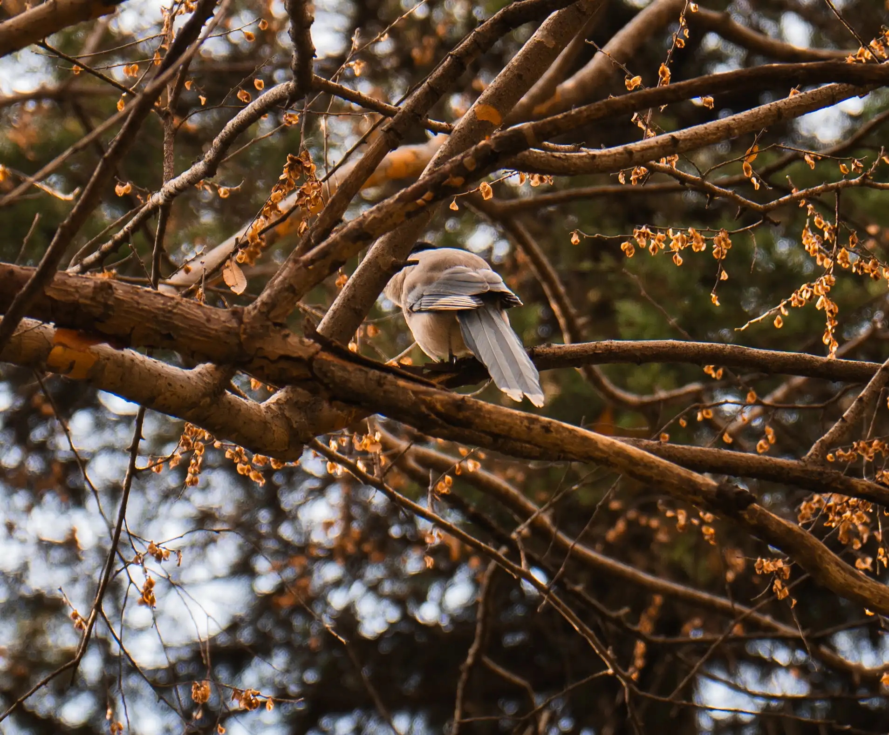
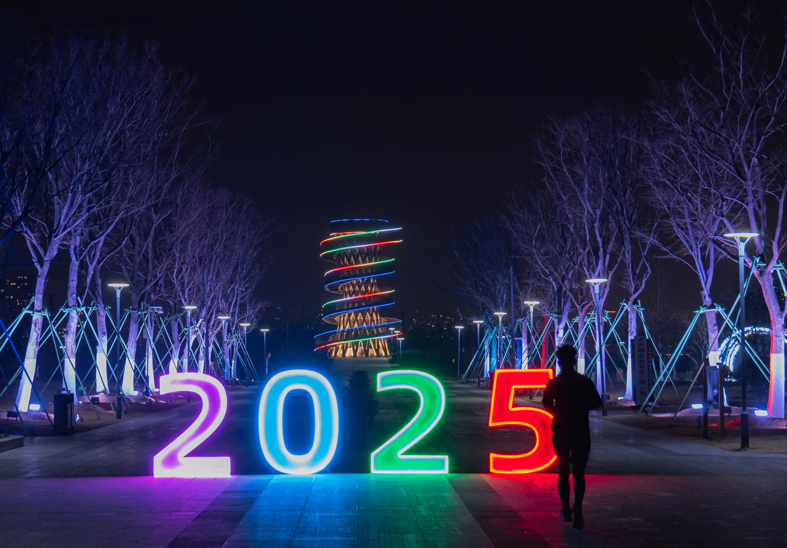

<article class="thumb">
    <a href="../PhotoAsset/images/fulls/USTC5.webp" class="image"></a>
    <h2>2025.1 Hefei</h2>
    <p>70mm不够啊</p>
</article>

<article class="thumb">
    <a href="../PhotoAsset/images/fulls/USTC6.webp" class="image"></a>
    <h2>2025.1 Hefei</h2>
    <p>糟心音乐会后的一点小收获</p>
</article>

<div class="pagination">
    <span>Page：</span>
    <div style="width: 20px;"></div> <!-- 添加一个占位符 -->
    {% assign total_pages = 4 %}
    <a href="{{ site.baseurl }}/photo1/">1</a>
    {% for page_num in (2..total_pages) %}
      <a href="{{ site.baseurl }}/photo{{ page_num }}/"> {{ page_num }}</a>
    {% endfor %}
  </div>
